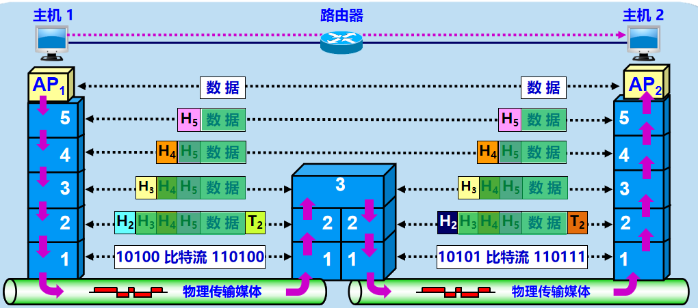
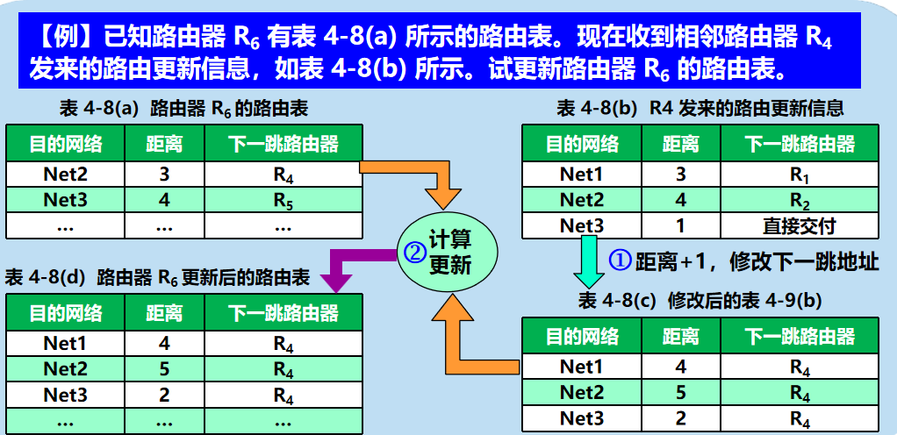

参考视频：计算机网络微课堂-湖科大教书匠
概述
RFC
- 互联网的标准化工作对互联网的发展起到了非常重要的作用，那么标准的制定通过发表RFC(Request For Comments)的形式完成。
- 但并非所有的RFC文档都是互联网标准。RFC文档按发表时间先后编号，即RFCxxxx。
C/S，P2P
- 端系统之间有两种通信方式：客户/服务器方式（Client / Server 方式）、对等方式（P2P）。
- C/S方式描述的是进程之间服务和被服务的关系。客户是服务的请求方，服务器是服务的提供方。客户与服务器的通信是双向的，可互相接发文件。
- C/S方式虽然逻辑简单，而且客户端不需要很复杂的操作。但是这样的话服务器端压力就很大，需要大算力和好硬件，而且还要一直运行被动等待客户的通信请求。因此，就诞生了P2P方式。
- P2P就是通信时不区分服务请求方和服务，只要运行了P2P软件，都可以双向通信。本质其实就是每个主机既是一个客户又是一个服务器。
电路交换，分组交换，报文交换
- 电路交换
定义：就是很多设备连接到交换机上，交换机感性理解就是有许多入口和出口，它可以指定某个入口的信号发送到某个出口，这样，多个设备就可以同时互不干扰的发送信号了。交换机又可以与交换机相连，扩大网络范围。
步骤：建立连接 --> 传输信号 --> 释放连接
优点 ：延迟小，传输数据有序；缺点：建立连接时间长，无法做到很多台主机之间同时相互通信(受限于通信线路数量)
- 报文交换
- 定义：直接把报文发送到交换机上，然后交换机存储转发给下一个交换机，一直到接收方收到报文为止。
- 优点：无需建立连接，动态分配线路；缺点：引入了转发时延，需要较大的缓存空间(报文可能很大)
- 分组交换
就是所谓的边缘部分和核心部分，发送方将报文发送到其所连网络中，通过路由器不断的转发，最终转发到接收方中。
步骤
- 构造分组：先将报文划分成若干个等长的数据段，在每个数据段前加上元数据，这些元数据叫首部。
- 存储转发：路由器在拿到分组后，根据首部进行查表转发，找到合适的转发接口，然后转发给下一个路由器。
- 还原报文：接收方在收到分组后，去掉首部，将数据段组合还原出报文。
优缺点
- 优点：
- 无需建立连接；
- 简化了存储管理（因为对报文进行了切片，所以路由器的缓存区只需固定即可，不论报文多大都可以切片为分组后转发出去）；
- 减小重发数据量（假设传输过程中出错了，报文交换就要重新发送整个报文，但分组交换只需重发出错的那个分组即可）；
- 缺点
- 引入了转发时延；
- 更多的元数据信息（切完片后每个分组都有首部）；
- 还原报文时复杂；
- 优点：
- 电路交换
网络概念及分类（WAN，MAN，LAN，PAN）
- 网络定义：网络并没有精确定义，一个认可度高的定义是：计算机网络主要是由一些通用的、可编程的硬件互连而成的，而这些硬件并非专门用来实现某一特定目的（例如，传送数据或视频信号）。这些可编程的硬件能够用来传送多种不同类型的数据，并能支持广泛的和日益增长的应用。
- 计网有几种分类方式：
- 按网络作用范围分：
- 广域网WAN：互联网的核心部分，距离从几十公里到几千公里不等。最好的例子就是互联网。
- 城域网MAN：作用范围是一个城市。
- 局域网LAN：作用范围局限在较小范围。例如公司网。
- 个人区域网PAN：范围在10m左右。例如蓝牙。
- 按网络使用者分：
- 公用网：按规定交钱的人都可以用的网络。
- 专用网：为特殊业务工作需要而建造的网络。
- 按网络作用范围分：
性能指标（速率，带宽，吞吐量，时延，时延积带宽积，RTT，利用率）
来来来，我们来解决下速率/带宽/吞吐量
- 带宽说的是水管，某个水管单位时间内最多允许流过的水的量。吞吐量就是说此时此刻水管流过的水量。
- 所以带宽就是吞吐量的上限。
- 至于速率这个玩意儿，就是个人为定的数，可能是平均值，也可能是别的，whatever。
- 然后他们仨的单位是一样的，因为都是描述每秒流过的流量。bit/s(b/s或bps), kbit/s, Mbit/s, Gbit/s。从小到大差距\(10^3\)量级。
- 然后这仨的关注点都是在发送速率上，所以它们影响的是发送时延。所以下列说法是错误的：“在高速链路（或高带宽链路）上，比特会传送得更快些”。
时延/延迟：指一个数据（报文/比特/分组）从网络/链路的一端传到另一端所需的时间。
- 组成：
- 发送时延(传输时延)：\(发送时延 = \frac{数据帧长度}{发送速率}\)
- 传播时延：\(传播时延 = \frac{信道长度}{信号在信道上的传播速率}\)。光纤是\(2.0 \times 10^5\text{km/s}\)，光速是\(3.0 \times 10^5\text{km/s}\)，铜线是\(2.3 \times 10^5\text{km/s}\)
- 处理时延：主机或路由器在收到分组时，为处理分组所花费的时间。
- 排队时延：分组在路由器输入输出队列中排队等待处理和转发所经历的时延。
- 组成：
时延带宽积：\(时延带宽积 = 传播时延 \times 带宽\)。传播时延就是一个时间嘛，然后带宽表示单位时间内流过的最大流量。所以时延带宽积就是整个管道里充满的比特数。
RTT：表示从发送方发送完数据，到发送方收到来自接收方的确认总共经历的时间。
利用率：
- 信道利用率：一个信道，有百分之几的时间是有数据通过的。
- 网络利用率：全网络信道利用率的加权平均。
- 排队论公式：\(D = \frac{D_0}{1 -
U}\)
- \(D\)：网络当前时延
- \(D_0\)：网络空闲的时延（其实就是没处理和排队时延）
- \(U\)：网络利用率
ISO、OSI/RM、TCP/IP
- ISO是一个国际标准化组织，OSI/RM是其提出的一种使全世界计算机在世界范围内互连的标准框架。
- OSI/RM是一个抽象框架；ISO 7498标准即七层协议的体系结构。
- 但是OSI/RM标准太几把复杂了，所以TCP/IP标准得到了市场的认可。
协议
- 网络协议(协议)：是为进行网络中数据交换而建立的规则、标准或约定 /
控制两个对等实体进行通信的规则的集合。
- 三要素：
- 语法：数据与控制信息的结构或格式。
- 语义：需要发出何种控制信息，完成何种动作以及做出何种响应。
- 同步：事件实现顺序的详细说明。
- 三要素：
- 协议数据单元PDU：对等层次之间传送的数据单位
- 服务数据单元SDU：层与层之间交换的数据的单位
- 网络协议(协议)：是为进行网络中数据交换而建立的规则、标准或约定 /
控制两个对等实体进行通信的规则的集合。
一些我觉得很好的图

图上的红字那几个就是每一层的PDU（协议数据单元）。
物理层
四个特性（机械，电气，功能，过程）
- 物理层的主要任务可描述为：确定与传输媒体的接口有关的一些特性。
- 所以就有了一些相关的特性：
- 机械特性：指明接口所用接线器的形状和尺寸、引脚数目和排列、固定和锁定装置等。
- 电气特性：指明在接口电缆的各条线上出现的电压范围。
- 功能特性：指明某条线上出现某一电平的电压意义。
- 过程特性：指明对于不同功能的各种可能事件的出现顺序。
消息、数据、信号、码元
- 消息：如话音、文字、图像、视频等。
- 数据：运送消息的实体。有意义的符号序列。
- 信号：数据的电气或电磁的表现。
- 码元：可以理解为一个脉冲信号，M进制码元可以携带\(\log_2 \text{M}\)个bit信息。
编码（不归零，归零，曼彻斯特，差分曼彻斯特）
定义：把数字信号/模拟信号变为数字信号的过程叫编码。
不归零编码：就是010101直接传，缺点就是接受双方时钟频率必须一样。
归零编码：就是10(-1)(0)1010(01)0这样传，接收方只需在信号归零时进行采样即可，无需保证双方时钟频率必须一样。但是缺点就是一半的编码内容都给归零了，浪费资源。
曼彻斯特编码：同样是为了解决时钟问题，它用跳变去表示数据。
差分曼彻斯特编码：就是看相邻之间是否相同，相同为0，不相同为1。
调制（调幅，调频，调相）
定义：把数字信号/模拟信号变为模拟信号的过程叫做调制。
调幅(AM)：频率不变，通过振幅来区分信号。
调频(FM)：振幅不变，通过频率来区分信号。
调相(PM)：A/F都不变，通过相位来区分信号。
这图调幅那里画的不太好，表示0不一定幅度是零，只要比高幅低就行。
正交振幅调制QAM：就是同时利用振幅和相位的不同去区分信号。
- 还好理解吧，反正就相位在波浪中间的自然表达不了那么高的幅度啊，但是波峰波谷的幅度上限高些，就有不同的幅度可选择。
奈奎斯特定理（奈氏准则），香农公式
- 信号在信道传输时，难免会失真。所以这两个公式就是计算在不失真的前提下，信道的极限容量是多少。
- 奈氏准则：
- 理想低通信道的最高码元传输速率(波特率/调制速率) = \(2 \times \text{W 码元/s}\)，\(\text{W}\)是信道带宽，单位为Hz。
- 理想带通信道的最高码元传输速率(波特率/调制速率) = \(\text{W 码元/s}\)。
- m进制码元 = \(\log_2m\) bit，所以对于m进制码元，码元/s = \(\log_2m\) bit/s
- 香农公式（适用带噪声情况）：
- \(c = W \times \log_2(1 +
\frac{S}{N})\)
- \(c\)：信道极限信息传输速率，单位b/s。
- \(W\)：信道带宽，单位Hz。
- \(\frac{S}{N}\)：信噪比，但是如果用dB去度量，那么 1dB的信噪比 = \(10 \times \log_{10}\frac{S}{N}\) dB
- \(c = W \times \log_2(1 +
\frac{S}{N})\)
传输介质
- 定义：数据传输系统中在发送器和接收器之间的物理通路。
- 引导型：双绞线，同轴电缆，光纤。
- 非引导型：无线电微波，卫星。
信道复用技术
- 有时候信道没那么多，但是要传播的信号居多，那么就要采用信道复用技术。
- 频分复用FDM：所有用户同时占用不同的频带资源并行通信。
- 时分复用TDM：所有用户在不同时间占用同样的频带宽度。（这样信道利用率低，因此有了变种统计时分复用STDM）
- 波分复用WDM：本质就是光的FDM，使用一根光纤来同时传输多个光载波信号。
- 码分复用CDM：
- 每个用户有一个唯一的码型，也称m bit位码片序列。（通常写作一个向量）
- 这些码型要满足俩俩正交（这个若满足那么\(ST=S\overline{T}=\overline{S}T=\overline{S}\overline{T}=\textbf{0}\)），自己的平方要为1，自己与自己反码点积要为-1。
- 在某一时刻，若一个用户想发送1，就发一个码型出去；若想发送0，就发一个反码型出去。然后m个用户在这一时刻发送的码型/反码型直接向量叠加，发送过去。到那边想看谁的信号就拿叠加信号点乘那个用户的码型。
- 若<0说明它发了一个0。
- 若>0说明它发了一个1。
- 若=0说明它啥也没发。
同步光纤网SONET，同步数字系列SDH
- SONET：同步光纤网络、同步时钟、光纤
- SDH：同步数字系列、可以同步也可以异
ADSL，光纤同轴混合网（HFC网），FTTx 技术
- ADSL：利用你家的电话线上网，就是三个信号电话信号、下载(下行)信号、上传(上行)信号，用频分复用的方式在电话线上传输。然后下载速度是远大于上传速度的。
- HFC：三网融合过渡的一个产物，就是把部分主干网换为光纤。
- FTTx：就是单独拉一根光纤到你家作为网线。
数据链路层
局域网协议把OSI数据链路层分为MAC子层(介质访问控制层)和LLC子层(逻辑链路控制层)。LLC 基本已经消失了，主要是 MAC 协议。
CRC
- 数据链路层的传输单元是帧，帧在传输过程中可能出现误码（0和1的互相转变），所以这时候引入检错码来知道传输过程中是否出现了误码。
- 具体来说，就是将上层网络层数据单元加上帧头帧尾成为帧，让其在数据链路层上传输，检错码就在帧尾里。
- 差错检测：指帧在传输中可能出现误码，接收方可以通过帧尾里的检错码来知道传输过程中是否出现了误码。
- 传输错误的比特占传输比特总数的比率称为误码率BER。
- 可靠传输：指尽管误码是不能完全避免的，但若能实现发送方发送什么，接收方就能收到什么，就称为可靠传输。
- CRC循环冗余校验：
- 接受双方约定好一个多项式，例如：\(G(x) = 1 \cdot x^3 + 1 \cdot x^2 + 0 \cdot x + 1 \cdot 1\)，然后假设要发送的信息是101001，那么第一步首先是在发送信息的后面补最高次项的次数那么多个0，也就是补3个0，即101001000（将这个数称为被除数）。这么做是为了避免不够除（后面你就知道了）。然后提取多项式的系数作为除数。即：1101。然后101001000与1101做除法，得到的余数为1，但是要补前导0直到位数与最高次数相同。
- 然后将余数 拼接 被除数，也就是把余数粘到发送信息的后面101001 001，然后就可以发送了。
- 接收方接收到这个数字后 ，会拿其对除数做除法，如果余数为0就没出差错。如果不为0就说明传输出现了错误。这很好理解。我们算出来的是余数，然后我们余数 + 被除数传去过，那么没出错的话显然就是可以整除除数的。
PPP
PPP协议是目前使用最广泛的点对点数据链路层协议。
PPP协议封装的数据链路帧 = 首部(5字节) + 数据 + 尾部(3字节)。
链路层协议规定了帧中数据部分的长度上限——最大传送单元（MTU）
组成：
- 一个将IP数据报封装到串行链路的方法。
- 一个链路控制协议LCP。
- 一套网络控制协议NCP
但是数据部分出现帧定界符怎么办？
PPP在同步传输链路时，采用零比特填充法。在异步传输时，采用字节填充法。
0x7E就是01111110，所以零比特填充法就是在数据里连续的5个1后面差一个0，这样就不会有0x7E的出现了。
字节填充法看下面的图片吧：
CSMA/CD，争用期，最小帧长，退避算法
CSMA/CD：载波监听多点接入 / 碰撞检测。
工作流程：
争用期(碰撞窗口)：以太网的端到端往返时延\(2\tau\)。
最短帧长：最短能满足“不会出现碰撞反馈收不到“ 的帧长。
- \(\frac{帧长}{数据传输速率} \ge \frac{距离}{信息传输速率} \times 2\)
- 很容易理解，尿断了就不能导电了。
退避算法（截断二进制指数退避）：
- 基本退避时间：\(2\tau\)。
- 从整数集合 \(\{0, 1, \cdots, 2^k - 1\}\) 中随机地取出一个数，记为 r。重传所需的时延 = r ⅹ 基本退避时间。
- 参数 \(k = \min(重传次数, 10)\)
- 当重传达 16 次仍不能成功时即丢弃该帧，并向高层报告。
MAC 地址
定义：就是在数据链路上有很多主机嘛，所以每个主机都需要有一个自身的标识。MAC地址一般被固化在网卡中，所以MAC地址也被称为硬件地址或者物理地址（但这不意味着它属于物理层）。
MAC地址通常遵循IEEE 802格式，即将每4个bit写为一个十六进制，共12个十六进制字符，写为：XX-XX-XX-XX-XX-XX或者XX:XX:XX:XX:XX:XX或XXXX.XXXX.XXXX
跟PPP标准协议的帧不同，也可以玩意叫MAC帧：
扩展以太网
- 物理层扩展以太网：集线器。一个集合就是一个碰撞域(冲突域)，也是一个广播域。
- 数据链路层扩展以太网：
- 使用交换机。交换机的每一个接口就是一个碰撞域。（因为数据只要传到交换机了就不会有什么碰撞了） ，所有接口是一个广播域。交换机就是多端口的网桥。
- 交换机的原理：交换机里有一个帧交换表，里面记录了每个接口连的设备的MAC地址。所以如果使用交换机的话，比如主机H1想传东西给H2，那么它就先把信息传到交换机，然后交换机就去查找哪个接口是H2的MAC地址，然后把信息从那个接口传过去。
- 这个帧交换表怎么来的？通过自学习算法得到。挺脑残的，就是若有一条信息进入交换机，交换机就会在表中登记这条信息来自于哪个端口，其对应发送者的MAC地址是啥，这是更新阶段；对于查找阶段，如果表里有记录就按照记录走，没记录都每个端口都发送（泛洪）。随着时间的推移，这个表必然就会逐渐填好。
- 但这种泛洪的做法弊端很大啊，试想假设多个交换机连接，表一开始都是空的，A给B发信息，然后去泛洪，那么对于一个交换机内，必然会记录多个端口的信息来源是A。那么下次B给A发的时候，就会给这些端口都去发。总之就是多了非常多冗余的信息，因为其实上我们只关心传的速度最快的那个端口的信息来源。
- 解决方法就是SPT生成树协议，就是把网络拓扑改为一棵树，that's all.
802.1Q、VLAN
先要知道广播域，这东西跟碰撞域不一样。广播域意思是只要能通信，那么就要一个域里。
广播域里一个严重问题就是广播风暴。跟前面为了用SPT一样，解决广播风暴的手段就是切割广播域。
可以用路由器去切，也可以用VLAN去切。VLAN是针对局域网LAN的一项技术。
虚拟局域网VLAN技术是在交换机上实现的，所以需要交换机有能够处理带有VLAN标记的帧——IEEE 802.1 Q帧，来个对比图吧：
网络层
网络层的两种设计思路：
- 要可靠！
- 虚电路。即通信之间先建立逻辑上的虚电路连接，保证双方通信所需的一切网络资源。如果再叠上可靠传输的网络协议，那么可使所发送的分组无差错按序到达终点，不丢失、不重复。
- 要简单！
- 数据报。每一个分组（即 IP 数据报）独立发送，与其前后的分组无关（不进行编号）。网络层不提供服务质量的承诺。即所传送的分组可能出错、丢失、重复和失序（不按序到达终点），也不保证分组传送的时限。
- 要可靠！
网络层的两个层面：
- 控制层面：根据路由选择协议所用的路由算法计算路由，创建出本路由器的路由表。
- 数据层面：路由器根据本路由器生成的转发表，把收到的分组从查找到的对应接口转发出去。
- Well, 这里可以引用SDN，因为控制层面的目的无非就是生成路由表。那么如果有一个中心计算器去统观全局，然后给每一个路由器分配路由表，这是很好的。但我觉得强化学习也可以引入进来，形成分布式自适应计算路由，调度网络流量。就像用一辆小车的强化学习去协调整个道路的车流量那个paper一样，我觉得同样可以抽取部分网络中的路由器，作为强化学习路由器，由它们去调控整个网络的流量运转。
互联设备
- 物理层和数据链路层的互联设备都不称为网络互连，它们仅仅是把网络扩大了。
- 但路由器就是连接网络跟网络，这很闭环，因为我们知道路由器就是为了切割广播域的，而广播域对应的范围就是网络。这点要跟冲突域区别。
- 物理层：中继器对数据信号的重新发送或者转发，来扩大网络传输的距离。集线器对接收到的信号进行再生整形放大，以扩大网络的传输距离，同时把所有节点集中在以它为中心的节点上。
- 数据链路层：网桥、交换机 按每一个包中的MAC地址相对简单地决策信息转发。
- 网络层：路由器实现不同网络之间的互连和路由选择以及分组转发。
- 运输层、应用层：网关用于两个高层协议不同的网络互连。
IP地址
在TCP/IP体系中，IP地址是一个最基本的概念。互联网上的每台主机（或路由器）的每个接口分配一个在全世界唯一的 IP 地址。网络层以上都用ip地址去标识，底下都用mac地址去标识。相当于ip是网络层写的一个接口。
IP地址是32位，但是为了方便，采用点分十进制表示方法进行表示。
IP地址 = 网络号 + 主机号。
IP地址的分类
- A类最大可指派的网络数是\(2^7 - 2\)，网络号0和127是保留地址。
- B类最大可指派的网络数是\(2^{14} - 1\)，网络号128.0是保留，采用无分类编址时可指派。
- C类最大可指派的网络数是\(2^{21} - 1\)，网络号192.0.0是保留，采用无分类编址可指派。
- 对于A/B/C类，主机号全零或全一都是不行的。（全零是网络地址，下面的子网你就理解了）
子网
- 子网其实就是三级结构：网络号 + 子网号 + 主机号。
- 子网号就是抢主机号的bit位，咋知道子网号有多少位呢？看子网掩码，子网掩码就是若干个1+若干个0。
- 首先根据ip的第一个十进制看看他是哪一个网络，知道它是哪一类网络后就可以知道它的网络号就多少位。拿其子网掩码位数 - 网络号位数就是子网号的位置。能划分的子网个数就是\(2^{子网号位数}\)，被划分了一部分位数的主机号就是用来分配的主机号。同样的，全0是网络地址，全1是广播地址。
CIDR
- CIDR是无分类编址的IPv4地址。也就是没有什么A/B/C/D/E分类了，直接在ip地址后加一个/num表示前num位是网络号，后面的是主机号。网络前缀相同的连续ip地址组成一个“CIDR地址块”。
- 所以，这种特性使得我们只要知道CIDR地址块中任何一个地址，就可以知道该地址块的全部细节。例如地址块的最小/最大地址、地址块中的地址数量、地址掩码（子网掩码）。
- 而且这样有一个好处，对于多个CIDR ip地址，我只需要找它们的最长公共前缀，这样路由表就只需要记录一条记录了。外界传信息会先传到路由表，然后路由表再泛洪下去。这种方法叫路由聚合，也叫构造超网。很聪明的设计。
ARP
- ARP就是地址解析协议，就是已知一个主机的ip，如何找出其mac地址。
- 其实很简单，ARP就是张表，比如H1想给R1发东西，他就需要知道R1的MAC和IP，IP已经知道了，MAC就去查自己的ARP表，里头记录了所有设备的IP和MAC的对应关系，如果找到了就ok了。如果没找到，就先告诉一个“ARP广播”，相当于去网络上请求别人的IP-MAC映射关系，请求到了就也ok了。但需要注意的是，ARP广播只能在一段链路或者是一个网络上进行。
- 所以如果跨网络通信，就需要依靠路由器。具体来说，首先电脑发现目标ip跟自己ip不在同一网段，所以会偷偷把目标ip改为默认网关，也就是网线连的那个路由器的端口的ip，然后发送一个广播arp请求。路由收到arp请求后，将返回一个arp响应给电脑。电脑现在有了默认网关的mac了，然后目标ip设为目标电脑ip，mac设为默认网关mac，然后封装为mac帧，传过去。此时，路由器收到的数据包就是目标ip是目标电脑。相当于数据从本电脑传到了路由器，那么递归的去做数据就到目标电脑了。
IP数据报格式
- IP数据报由首部和数据两部分组成，首部分为固定部分(20字节)+可变部分。
- 源地址和目的地址就写在首部里面。
转发分组过程
其实就是路由聚合那里的策略，就是先拿目标ip and 一下自己的子网掩码，看看目标ip在不在自己网段里，不在的话，就将目标ip发到路由器那，挨个与路由器的记录也就是每一个最长公共前缀去 and ，如果匹配了，就转发到那个接口。
ICMP
- ICMP就是IP数据报，只不过数据换成了ICMP内容。
- 分类：
- 只有以下几类出错时会返回ICMP数据报，其它原因例如IP数据报头部校验出错，那么就直接丢弃。
- 差错报告报文：终点不可达、源点抑制、时间超过（用的首部的TTL实现的这一功能）、参数问题、改变路由（重定向）
- 询问报文：回答请求和回答、时间戳请求和回答
- 应用：ping是用的询问报文，traceroute是用的时间超过+终点不可达(故意弄了个超大的端口)
IPv6
从32位扩展到128位。
IPv6数据报 = 基本首部 + 有效载荷。
首部必须是8字节的整数倍，基本首部是40字节，可以在有效载荷里弄出一些空间作为扩充首部。
IPv6地址使用冒号十六进制记法，即4个十六进制为一组，共8组，组与组之间用 : 隔开。可以使用零压缩。
路由协议：RIP、OSPF、BGP
路由协议就是说的是网络层的控制层面。也就是我前面说自己idea那里。
路由选择有两种方式：静态路由选择（人工配置）、动态路由选择（通过路由选择协议自动获取路由信息）
但一般我们都是用的分层次的路由选择协议，即将互联网划分为一个个自治系统AS，然后系统内部用内部网关协议IGP，系统之间用外部网关协议EGP。
路由选择协议分类：
内部网关协议IGP
路由信息RIP（基于距离向量），基于UDP的域内路由协议。工作协议层次是应用层。

开放式最短路径优先OSPF（基于链路状态）
- 基于IP的域内路由协议，工作协议层次是网络层。
- OSPF 只在链路状态发生变化时，才向本自治系统中的所有路由器用洪泛法发送与本路由器相邻的所有路由器的链路状态信息。链路状态指明本路由器和哪些路由器相邻，以及该链路的度量（度量可表示费用、距离、时延、带宽等），所有的路由器最终都能建立一个全网的拓扑结构图。
外部网关EGP
- 边界网关协议BGP（基于路径向量），基于TCP的域间路由协议，
- BGP 力求寻找一条能够到达目的网络（可达）且比较好的路由（不兜圈子），而非寻找最佳路由
- 边界网关协议BGP（基于路径向量），基于TCP的域间路由协议，
IP多播、IGMP报文、多播路由选择
IP多播
在一对多的通信中，多播可以比单播节省很多资源。
局域网具有硬件多播功能，所以不需要复制分组就能使所有的多播组成员收到分组。
IP 多播所传送的分组需要使用多播 IP 地址。在传统的 IP 地址中的 D 类地址就是多播地址，每个 D 类地址可以标识一个多播组。
多台主机可以加入到一个多播组中共享一个多播地址。不同网络的主机可以加入到同一个多播组中。每一台主机可以随时加入或离开一个多播组。
能够运行多播协议的路由器为多播路由器。
多播地址只能用于目的地址，不能用于源地址。
IP 多播有两种：在本局域网上硬件多播、在互联网范围内进行多播。
IGMP报文就是IP数据报，只不过数据换成了IGMP内容。它用于让连接在本地局域网上的多播路由器知道本局域网上是否有主机参加或退出了某个多播组。
多播路由选择
- 洪泛与剪除
- 隧道技术
- 基于核心的发现技术
VPN、NAT
VPN：
因为 IP 地址的紧缺。所以现在使用了一种本地地址。本地地址仅在本机构内部有效，不是全球唯一的地址，又称可重用地址。
本地地址只能用于一个机构的内部通信，不能和互联网行的主机通信。互联网中的所有路由器对目的地址是专用地址的数据报一律不转发。
有时一个机构的分布范围很广，就需要用公共的互联网作为本机构各专用网之间的通信载体，这样的称为虚拟专用网 VPN。
VPN 依然只用于机构内的通信，但是要经过公用的互联网，通过互联网传送的数据都要加密。这里使用了隧道技术。
VPN 中每个不同的场所必须至少有一个合法的全球 IP 地址。
NAT：
网络地址转换 NAT 用于实现专用网中的主机到互联网上的主机的通信。
它需要在专用网连接到互联网的路由器上安装 NAT 软件，这种路由器称为 NAT 路由器，NAT 路由器至少有一个全球地址。
使用本地地址的主机和外界通信时要在 NAT 路由器上将本地地址转换为全球地址。
NAT 路由器中有一个地址转换表，存储本地地址与转换后的全球地址的对应关系。
通过 NAT 路由器的通信必须由专用网内的主机发起，因此专用网内的主机不能作为服务器。
现在的 NAT 转换表把端口号也利用上了。这样 NAT 路由器只需要有一个全球地址，通过给具有不同本地地址的主机分配不同的端口号就可以实现内部多个主机与外界互联网的通信。
MPLS：一种 IP 增强技术。
SDN：是一个体系结构，是一种设计、构建和管理网络的新方法或新概念。核心思想把控制层面和数据层面分离，而让控制层面利用软件控制数据层面中的许多设备。
运输层
概念
- 之前的物理层、数据链路层、网络层共同解决实现了主机到主机的通信。
- 但通信真正的实体在通信两端主机中的进程。如何为运行在不同主机上的应用进程提供直接的通信服务是运输层的任务。
- 运输层为应用层提供了两种不同的运输协议，面向连接的TCP(传输控制协议)（全双工可靠信道）和无连接的UDP(用户数据协议)（不可靠信道）。
- 两个对等运输实体在通信时传送的数据单位叫作运输协议数据单元 TPDU；TCP 传送的数据单位协议是 TCP 报文段；UDP 传送的数据单位协议是 UDP 报文或用户数据报。
- 复用：应用进程都可以通过运输层再传送到网络层。
- 分用：运输层从网络层收到发送给应用进程的数据后，必须分别交付给指明的各应用进程。
- 用端口来区分不同的进程，16位。01023是熟知端口，102449151是登记端口，49152~65535是短暂端口。
- UDP用户数据报和TCP报文段的格式都是首部+数据。UDP的首部仅8字节，TCP报文段首部最小20字节，最大60字节。
- UDP支持一对一、一对多、多对一、多对多。TCP仅支持一对一。
- UDP对应用层交付的报文直接打包。TCP面向字节流。
- UDP不使用流量控制和拥塞控制。TCP使用流量控制和拥塞控制。
- TCP连接的端点是套接字socket，socket=(IP地址 : 端口号)，TCP连接就是协议软件所提供的一种抽象。
可靠传输的两种协议
- 停止等待协议：每发送完一个分组就停止发送，等待对方的确认。在收到确认后再发送下一个分组。收不到就超时重传。
- ARQ协议：
- 停止-等待ARQ：
- 连续ARQ：窗口大小\(2^k - 1\)。
- 选择重发ARQ：窗口大小\(2^{k-1}\)，k是用来表示序号最大值所需的bit数。比如序号最大是7（从0开始），那么k=3。
- 回退N帧ARQ：窗口大小\(2^k - 1\)
TCP 报文段的首部格式
- 序号：在一个 TCP 连接中传送的字节流中的每一个字节都要按顺序编号。首部中的序号字段存储本报文段发送的数据的第一个字节的序号。序号字段只有 32 位，序号值不能超过 2^32。
- 确认号：首部中的确认号是期望收到对方下一个报文端的第一个数据字节的序号。若确认号为 N，表明到 N-1为止的数据都已正确收到。
- 数据偏移：数据部分距报文起始点的偏移，实际等于首部长度。首部长度在 20~60 字节之间。
- 6个控制位：
- 紧急 URG：当 URG=1，此报文段需要尽快传送，优先级高。
- 确认 ACK：当 ACK=1，确认号字段有效。连接建立后的所有报文段都必须令 ACK=1。
- 推送 PSH：当 PSH=1，接收方收到报文后尽快交付应用进程，而非等缓存满了再交付。
- 复位 RST：当 RST=1，表明 TCP 连接中出现严重差错，需要释放连接再重新建立连接。
- 同步 SYN：当 SYN=1，表明这个一个连接报文。如果 ACK=0 则是连接请求报文，如果 ACK=1 表明这是连接接受报文。
- 终止 FIN：当 FIN=1，表明发送方已发送完数据，并要求释放连接。
- 窗口：发送本报文段的一方的接收窗口大小。
- 检验和：检验整个数据报。
- 紧急指针：当 URG=1 时才有意义，指出本报文段中的紧急数据的字节数。即使在窗口为 0 时也可以发送紧急数据。
- 选项：长度可，变最长 40 字节。选项有最大报文段长度 MSS、窗口扩大选项、时间戳选项、选择确认选项等。
TCP 的流量控制
TCP接收方利用自己的接收窗口的大小来限制发送方发送窗口的大小。所以本质上这功能是由接收方执行的。
TCP发送方收到接收方的零窗口通知后(接收方没缓存空间了)，应启动持续计时器。持续计时器超时后，向接收方发送零窗口探测报文。
不管是普通的TCP报文段还是零窗口探测报文，都有超时重传机制。超时重传时间RTO计算公式如下：
TCP 的拥塞控制
慢开始、拥塞避免
快重传、快恢复
- 有时个别报文段会在网络中丢失，但实际上网络并未发生拥塞。这将导致放松方超时重传，并误认为网络发生了拥塞。所谓快重传，就是使发送方尽快进行重传，即每次收到报文都确认一下。若发送方一旦收到3个连续的重复确认，就将相应报文段立即重传，并将ssthresh设置为cwnd的一半，然后cwnd也自己更新为自己的一半。
TCP 的运输连接管理——TCP连接建立
- 很好理解吧，首先请求建立连接也就是先两次握手，就先把SYN开了。然后ACK就自从第二次握手开始就一直有的。
- seq就是当前要传数据的第一个字节序号，但是在握手阶段不涉及数据，所以TCP/IP协议强制规定SYS=1的报文段强制消耗掉一个序号，普通的确认报文若不携带数据，则不消耗序号。所以这就是为什么第三次握手的seq是x+1。
- ack就是你期望收到对面下一个数据的序号。
- 第三次握手的原因是为了避免防止已失效的连接请求报文段又突然传送到服务器，因而导致错误。
TCP 的运输连接管理——TCP连接释放
- 自己走一遍就行了。把握手的SYN换为了FIN，然后ACK是一直都有的。seq和ack就正常进行。要等待2MSL是因为如果最后一次握手丢失，若没有时间等待将无法重传从而导致服务器关闭不掉。
- 另外，除了这种正常的释放方式，还可能会通过保活计时器关闭连接。即TCP服务器进程每收到一次TCP客户进程的数据，就重新设置并启动保活计时器，若保活计时器定时周期内未收到TCP客户进程发来的数据，则当保活计时器到时后，TCP服务器进程就向TCP客户进程发送一个探测报文段，以后则每隔75秒钟发送一次。若一连发送10个探测报文段后仍无TCP客户进程的响应，TCP服务器进程就认为TCP客户进程所在主机出了故障，接着就关闭这个连接。
应用层
DNS
基于UDP的。
互联网使用的命名系统。用来把人们使用的机器名字（域名）转换为 IP 地址。
域名采用层次树状结构的命名方法：xxx.xxx.xxx.xxx。
DNS 是一个联机分布式数据库系统，采用客户-服务器方式。
域名到 IP 地址的解析是由若干个域名服务器共同完成。
域名服务器类型
- 根域名服务器
- 所有根域名服务器都知道所有的顶级域名服务器的域名和 IP 地址。不管是哪一个本地域名服务器，若要对互联网上任何一个域名进行解析，只要自己无法解析，就首先求助于根域名服务器。根域名服务器共有 13 套装置。
- 顶级域名服务器
- 顶级域名服务器（TLD 服务器）负责管理在该顶级域名服务器注册的所有二级域名。（一般.com的到这里就解析完毕了）
- 权限域名服务器
- 负责一个区的域名服务器。
- 本地域名服务器
- 本地域名服务器有时也称为默认域名服务器。当所要查询的主机也属于同一个本地 ISP 时，该本地域名服务器立即就能将所查询的主机名转换为它的 IP 地址，而不需要再去询问其他的域名服务器。
- 根域名服务器
域名的解析过程

FTP、TFTP
文件传送协议 FTP 是互联网上使用得最广泛的文件传送协议。只提供文件传送的一些基本服务，它使用 TCP 可靠的运输服务。使用客户服务器方式。一个 FTP 服务器进程可通过开多个进程同时为多个客户进程提供服务。
FTP客户和服务器之间要建立以下两个并行的TCP连接：控制连接、数据连接。
默认情况下，FTP使用TCP 21端口进行控制连接，TCP 20端口进行数据连接。但是，是否使用TCP 20端口建立数据连接与传输模式有关，主动方式使用TCP 20端口，被动方式由服务器和客户端自行协商决定。
简单文件传送协议 TFTP 使用客户服务器方式和使用 UDP 数据报，因此 TFTP 需要有自己的差错改正措施。UDP 熟知端口号码为 69。TFTP 采用了类似停止等待协议的重传机制。即发送后就等待确认，没有确认就重传。
TELNET：远程终端协议 TELNET 采用客户服务器模型。能将客户端的操作传到服务器端，然后将服务器端的输出返回到客户端屏幕。TELNET 采用 TCP 协议。TELNET 的服务器进程类似 FTP，由主进程等待新的请求，并产生从属进程来处理每一个连接。
WWW、URL、HTTP、HTML
Web 要处理的几个问题及解决方式：
如何标志分布在整个互联网上的文档：采用统一资源定位符 URL。
- URL 的一般形式：<协议>://<主机>:<端口>/<路径>
- 协议有例如http。端口通常都省略掉，HTTP 的默认端口号是 80。
用什么协议来实现万维网上的链接：采用超文本传送协议 HTTP。
怎么实现创作不同风格的万维网文档：使用超文本标记语言 HTML。
HTTP协议
HTTP协议是无状态的，为了使其有记忆功能必须引入cookie。
HTTP超文本传输协议定义了浏览器怎样向万维网服务器请求万维网文档，以及万维网服务器怎样把万维网文档传送给浏览器。HTTP 是面向事务的应用层协议。
HTTP/1.0采用非持续连接
well, 可以发现第一条请求报文都捎在第三次握手TCP连接确认那里。所以是带有数据的，所以必然是要消耗掉一个序号的。
HTTP/1.1采用持续连接方式
HTTP的报文格式

代理服务器：代理服务器又称万维网高速缓存，它把最近的一些请求和响应暂存在本地磁盘中。当新请求与暂存的请求相同，就返回暂存的响应。代理服务器可以在客户端或服务端工作，也可以在中间系统上工作。
STMP、POP3、IMAP、MIME
- 简单邮件发送协议：SMTP。
- 邮件读取协议：POP3 和 IMAP。
- 通用互联网邮件扩充 MIME。
- SMTP 和 POP3（或 IMAP）都使用 TCP 连接可靠地传送邮件。
- 电子邮件系统采用客户/服务器方式，三个主要组成构件：用户代理、邮件服务器、电子邮件协议。
- SMTP基于TCP连接，端口号25。只能传送ASCII码，为了解决这个问题，提出了多用途因特网邮件扩展MIME。
- POP3只能下载不能管理。IMAP可以管理。它们俩都是基于TCP。POP3的端口为110，IMAP4的端口为143。
- 基于web的电子邮件：这种工作模式在用户浏览器与邮件服务器网站之间使用http协议，而邮件服务器之间使用SMTP协议。
DHCP
动态主机配置协议 DHCP 允许一台计算机加入网络和获取 IP 地址，而不用手工配置。
一些基本参数：IP地址、子网掩码、默认网关、DNS的IP地址。
DHCP 基于 UDP 工作，DHCP 服务器运行在 67 号端口， DHCP客户运行在 68 号端口。
工作流程：
自己看一遍吧，挺符合直觉的。首先先来点广播请求，把自己的MAC封装进去。然后接收到的DHCP服务器就会把配置文件传回来。传回来你自己选一个呗，选好了再广播一下告诉你选好了（此时目标ip仍然是0.0.0.0）。DHCP如果发现这个传回来的报文的事务id与自己当时给出去报文的事务id一样，就知道客户选择了自己的配置文件。于是就扔一个确认报文回去。
至于续约，反正就先请求呗，然后回应一下就好了。如果不回应就重传下。最后客户可以随时解约。
但是如果你网络里没有DHCP服务器咋办？你的广播必然会被路由器丢掉。所以这时候就给路由器配置DHCP中继代理，也就是路由器会转发你的DHCP广播请求。问题解决。
无线网络
无线局域网 WLAN
- LAN在前面的网络分类讲过了，WLAN就是无线局域网，that's all.
- 无线局域网的组成：
- 有固定基础设置的 WLAN：IEEE 802.11
- 无固定基础设置的 WLAN：移动自组网络
- IEEE 802.11 是一个有固定基础设施的无线局域网的国际标准。
- 使用星形拓扑，中心叫做接入点 AP。
- AP 是无线局域网的基础设施，也是一个链路层的设备。（注意区分，路由器什么的都是网络层设备了已经）
- AP 也叫做无线接入点 WAP。
- 无线局域网中的站点对网内或网外的通信都必须通过 AP。
- 在 MAC 层使用 CSMA/CA 协议
- 凡使用 802.11 系列协议的局域网又称为 Wi-Fi 。
- 802.11 规定无线局域网的最小构件是基本服务集 BSS。一个 BSS 包括一个基站和若干个移动站，接入点 AP 就是 BSS 内的基站。每个 AP 都有一个分配的名字，称为服务集标识符 SSID，它其实就是使用该 AP 的无线局域网的名字（也就是 wifi 名字）。每个 AP 有一个唯一的 48 位 MAC 地址，名称是基本服务集标识符 BSSID。
- 移动站关联 AP 后，要通过该 AP 向该子网发送 DHCP 发现报文以获取 IP 地址。这之后，移动站就作为该 AP 子网的成员加入到了网络中。移动站与 AP 间通信采用的协议就是 802.11 协议。
- 现在的无线局域网一般采用了加密方案 WPA 或 WPA2，这时要加入该无线局域网就要输入密码。
- 移动自组网络
- 没有固定基础设施（即没有AP）的无线局域网。无线传感器网络 WSN 是一种近年来发展很快的移动自组网络。它由大量传感器结点通过无线通信技术构成。物联网 IoT 就是 WSN 的应用领域。
802.11 局域网的物理层
物理层有几种实现方法：扩频、多入多出 MIMO、正交频分复用 OFDM、跳频扩频 FHSS、红外线 IR
802.11 局域网的 MAC 层协议、DCF/PCF、时间间隔
必须要解决共享信道上的碰撞问题。
CSMA/CA：载波监听多点接入/碰撞避免。
CSMA/CD：载波监听多点接入/碰撞检测。
802.11 无线以太网在 MAC 层使用 CSMA/CA 协议和停止等待协议。
使用停止等待协议是因为无线信道的通信质量远不如有限信道，要使用停止等待来保证可靠传输。
无线局域网中不能使用 CSMA/CD 协议，原因是因为隐蔽站问题 / 暴露站问题。
所以不能使用 CSMA/CD 的原因：
1. 无线局域网的适配器无法实现碰撞检测。 2. 检测到信道空闲，其实信道可能并不空闲。 3. 即使能够在硬件上实现无线局域网的碰撞检测功能，也无法检测出隐蔽站问题带来的碰撞。 4. 即使能够在硬件上实现无线局域网的碰撞检测功能，也会因为暴露站问题导致信道利用率低下。802.11 的MAC层有两个子层：DCF 和 PCF。它们通过协调功能来确定在基本服务集 BSS 中的移动站何时可以发送或接收数据。
- 分布协调功能 DCF：不采用任何中心控制，让各个站通过争用信道来获取发送权，必须要实现的功能。
- 点协调功能 PCF：使用集中控制的接入算法，用类似于探询的方法把发送数据权轮流交给各个站，可选。
时间间隔
- 在完成发送后，必须再等待一段很短的时间（继续监听）才能发送下一帧。这段时间的通称是帧间间隔 IFS。
- 两种常用的帧间间隔：分布协调功能帧间间隔 DIFS。短帧间间隔 SIFS。
- 使用SIFS帧的类型有：ACK帧、CTS帧、过长MAC帧分片后的数据帧、回答AP探测请求帧、PCF方式中AP发出的任何帧。
- 使用DIFS帧的类型有：凡在空闲时间想发送数据的站点，必须等待时间 DIFS 后才能发送。保证了确认帧 ACK 得以优先发送。
几种为了缓解碰撞的trick
- 虚拟载波监听：发送信息的站点会把自己所占用的一段时间广播，所以在它广播范围内的各站都能收到这一消息，并创建自己的网络分配向量 NAV。NAV就是一段不能发送数据的时间。
- 随机退避算法：当某个站发现信道变为空闲时，要等待一个 DIFS 的间隔，再执行退避算法，维护一个退避计时器，计时器归零后就立即发送。这样也可以降低碰撞概率。
- 信道预约(RTS/CTS)：
- 本质就是上发送数据帧先对信道预约一段时间。因为重发数据会比较耗时间，但RTS/CTS帧比较小，所以如果这时候碰也没啥。信道预约可选，适用于长度较大的数据帧。
- A要发消息，先等待DIFS时间，然后发一个RTS, 跟一个SIFS，AP回一个CTS, 跟一个SIFS。这时候A直接把data发过去了, 跟一个SIFS。然后AP回一个ACK, 跟一个SIFS，只不过SIFS太短了被下一次发消息前要等待的DIFS时间吞了。
802.11 局域网的 MAC 帧：控制帧、数据帧和管理帧
- MAC 帧的首部有 30 字节，尾部是 4 字节的帧检验序列。
- 802.11 的 MAC 帧有三种类型：控制帧、数据帧、管理帧。
补充
- 校验和
- MAC帧的校验和同时检验首部和数据。
- IP首部校验和只检验首部。
- UDP/TCP校验和同时检验伪首部、首部和数据。
- 长度
丢到物理层还要在以太网帧前面加上7字节的前同步码和1字节的帧开始定界符。
脉冲编码调制的过程（模拟数据变数字信号）简单的说可分为三个过程，它们是：采样、量化、编码。
局域网协议把OSI数据链路层分为LLC子层和MAC子层。
PPP有两个子协议：链路控制协议LCP、网络控制协议NCP。
WLAN的MAC层有两种工作模式：分布协调DCF、点协调PCF。
IP数据报在传播过程中源地址和目的地址都不会改变。
IP数据报的首部长度是20~60字节，控制IP数据报总长度的参数有16bit，故IP数据报的最长长度为\(2^{16}-1\)。IP数据报长度必须<=MTU，所以就会在路由器上边分片，在目的主机那再组装起来。
从上到下是封装的过程，从下到上是解封装的过程。
VLAN是跨越多个端口的逻辑分组，因此不存在冲突域的概念。各个VLAN之间不能直接通信，不是不能通信，它们之间可以通过路由器或三层交换机即可通信。
TCP/IP参考模型的网络层提供的是无连接不可靠的数据报服务。
路由器实现路由的依据是数据包中的目的IP地址。
IEEE 802.11 采用的介质访问机制是 CSMA/CA。
交换机的每一个端口都是一个独立的冲突域，意味着每个用户都可以独占带宽，而不会受到其它用户的影响。
互联网的核心部分采用分组交换技术（存储转发）。
基本概念
实体:(N)层中任何可发送或接受信息的软件进程或硬件设备
协议:两个对等实体间进行通信所遵循的规则集合
服务:下层向上层提供的支持(服务)（功能）
接口:上下层间交换信息的方式（接口）
网际组管理协议 IGMP 不知道IP多播组包含的成员数，也不知道这些成员都分布在哪些网络上。
拥塞控制与流量控制的区别
拥塞控制：防止过多的数据注入到网络中，避免网络中的路由器或链路过载。是一个全局性的过程，涉及到所有的主机、路由器，以及与降低网络传输性能有关的所有因素。
流量控制：抑制发送端发送数据的速率，以使接收端来得及接收。点对点通信量的控制，是个端到端的问题。
海明码公式：\(2^p - 1 \ge p + m\)
数据链路层是如何实现点对点的速度匹配和可靠性传输的？
- 封装成帧：在一段数据的前后分别添加首部和尾部，构成一个帧。
- 透明传输：无论发送什么样的比特组合的数据，这些数据都能够按照原样没有差错地通过这个数据链路层。
- 差错控制：纠正信道的噪声导致的数据传输问题。
UDP和IP都是无连接的不可靠传输，那可不可以去掉UDP层，直接让IP层为应用层提供服务？
- 差错检测
- 端到端逻辑链路，端口
- 复用（UDP数据包组装成不同IP数据报），分用（根据UDP用户数据报首部中的目的端口号，将数据报分别传送到相应的端口）
网络层的两种观点：面向连接的可靠虚电路服务（先建立虚电路）；无连接不可靠的数据报服务。
点对点协议PPP、高级数据链路控制HDLC(面向比特)
- HDLC可靠，PPP不可靠
- HDLC现在不用了，PPP现在在用
- PPP简单,HDLC复杂
- PPP可以在其上面封装多种网络层协议，HDLC不可以
- PPP是面向帧的，HDLC是面向比特的
数据报与虚电路
- ISO/OSI参考模型中，可同时提供无连接服务和面向连接服务的是网络层，运输层只有有连接。TCP/IP是运输层提供俩，然后网络层提供无连接。
- RIP和OSPF区别：
- RIP基于距离矢量算法，通过定期广播整个路由表，使用跳数作为度量标准，收敛较慢。
- OSPF基于链路状态算法，每个路由器通过链路状态广告广播自身链路状态信息，只有在网络拓扑变化时才更新，利用最短路径优先算法计算最短路径，收敛速度较快，且支持区域划分以适应更复杂的网络。
- 距离向量与路径向量
- 距离向量：每个节点知道到其邻居的链路距离。每个节点向所有邻居广播已知的最短距离向量。每个节点使用接收到的向量来更新自己的向量。周期性地重复上述过程。
- 路径向量：每个节点通过链路状态分组泛洪其邻居信息。所有节点学习完整的网络图。每个节点运行Dijkstra算法来计算到达每个目的地的路径。
- 本地域名服务器、根域名服务器、顶级域名服务器、权限域名服务器。
- 数据链路层采用停止等待协议，是为了解决该层在传输中的哪些问题？是通过什么样的机制来解决这些问题的？
- 数据链路层采用停止等待协议是为了解决传输中的可靠性、错误检测与恢复、以及流量控制问题。它通过发送方发送数据帧后等待接收方确认（ACK），如果超时或发生错误，则重新发送帧，从而保证数据可靠传输，并避免接收方缓冲区溢出。